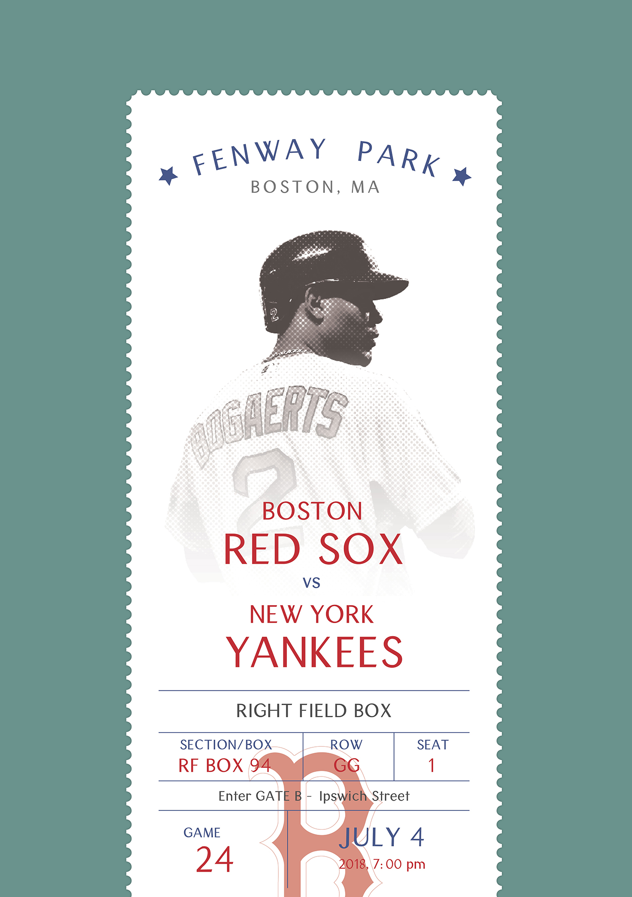

Completed under Mark Laughlin at Northeastern University for Typography III.
Instructed to create a typeface for the city of Boston, I focused on designing a sans-serif typeface that was clean, but humanistic. To me, Boston is a city that is rooted in tradition, but on the precipice of major change. The typeface is clean enough to read at a small size, and has enough detail to stand alone as a display typeface. I will probably be working on kerning and tweaking it for a casual few years.
